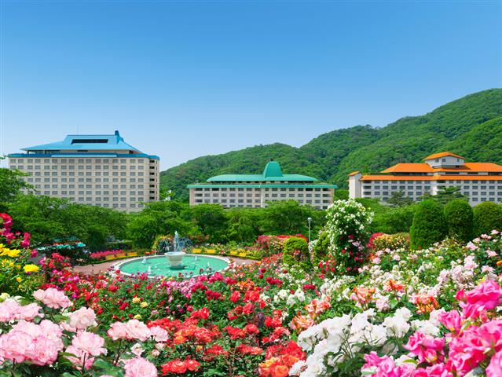
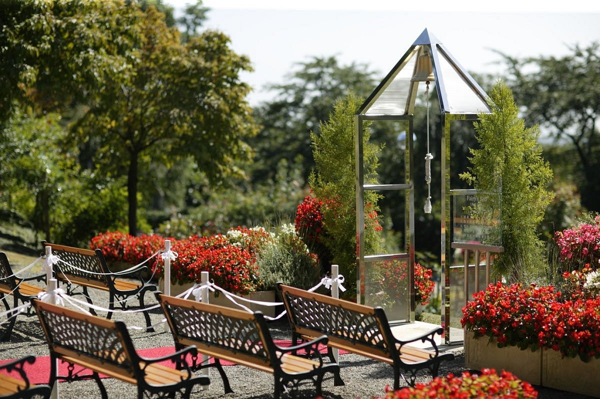
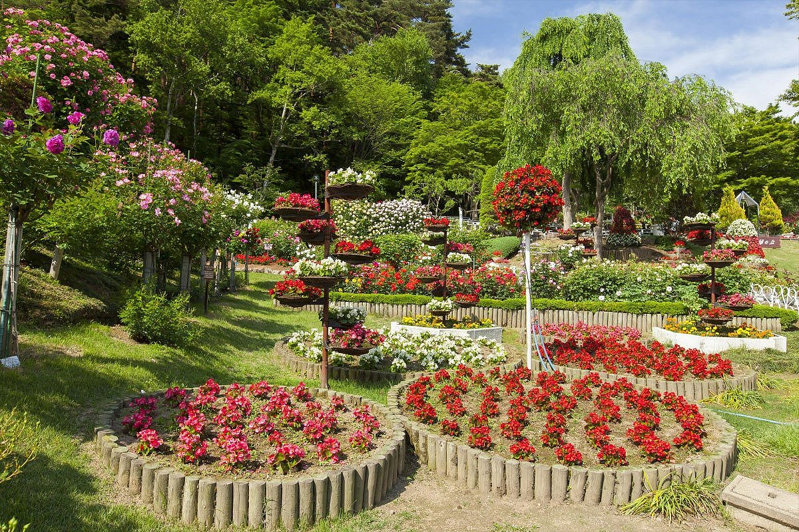

花巻温泉バラ園



約450をこえる世界のバラが、四季折々に鮮やかな色彩と豊かな香りで園内
を彩ります。バラの中には当庭園で品種改良され新品種として認定されたもの
や、宮沢賢治が設計した日時計花壇もあります。夜はライトアップで装飾され
光で煌めく幻想的なナイトローズガーデンをお楽しみいただけます。
観光情報
ジャンル
イベント
所在地
岩手県花巻市湯本1-125
電話番号
0198-37-2180
営業日
5月下旬～10月下旬
[アクセス経路]
花巻ICより直進4km、「花巻温泉」の白いゲートが目印です